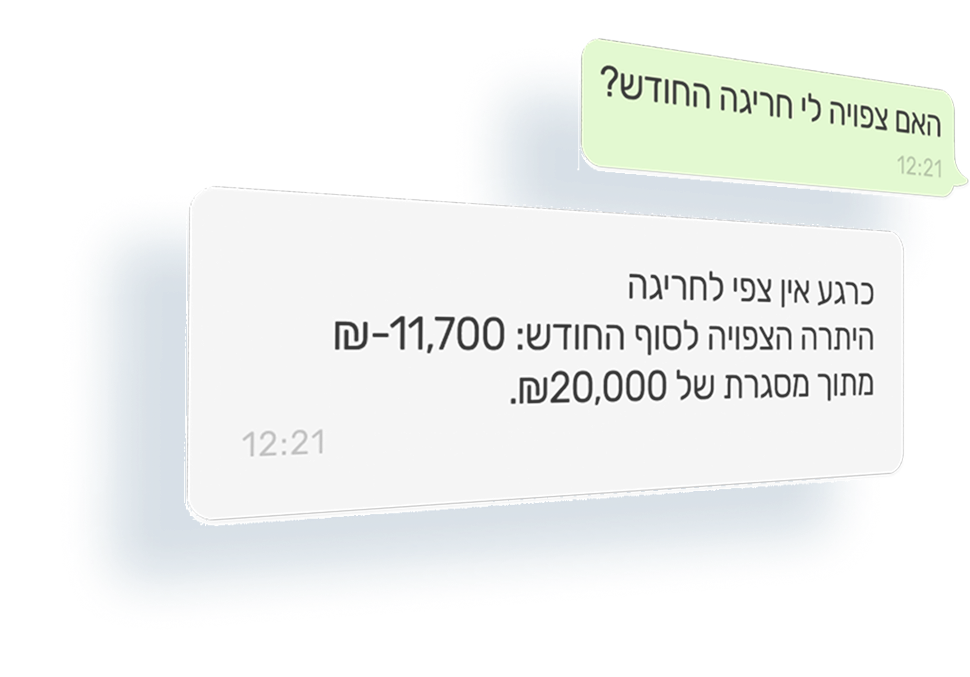

תראה היום מה צפוי בחשבון בעוד חודש.
מנהל תזרים, יועץ פיננסי ו-AI. בשבילך.
מנהל תזרים אישי עובר על הכסף שלך כל יום, יועץ פיננסי יושב איתך פעם בחודש, ועוזר AI עונה על המספרים בעברית. אתה רואה חריגה לפני שהיא קורה, ולא מנחש יותר.
